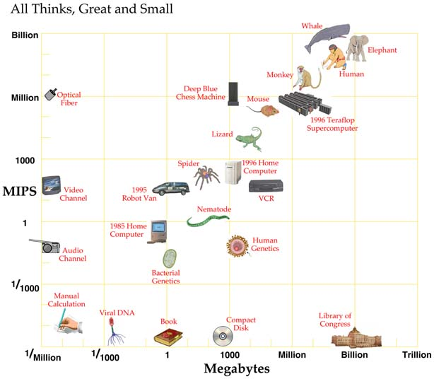
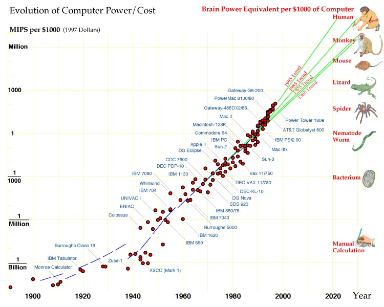
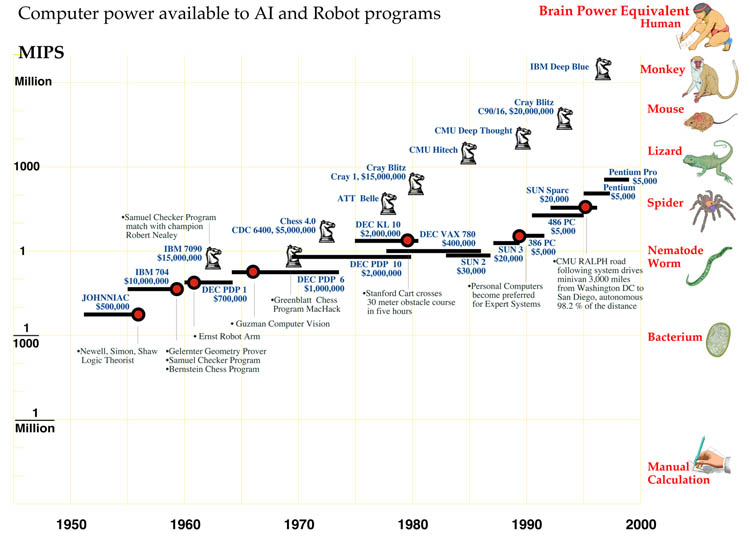
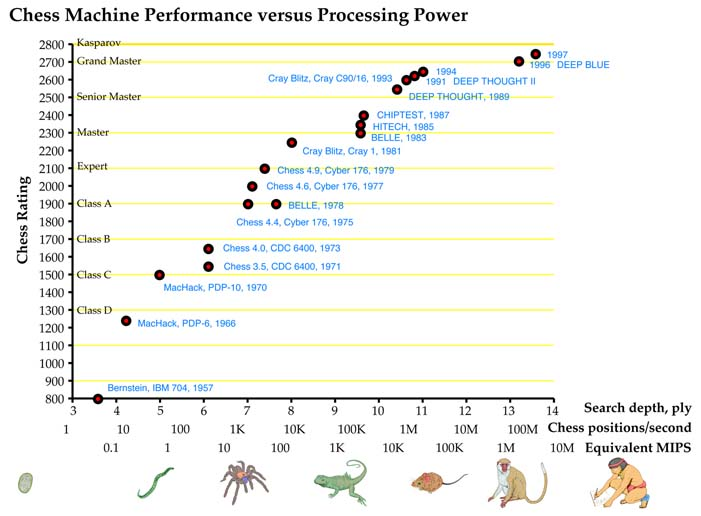

Abstract
This paper describes how the performance of AI machines tends to improve at the same pace that AI researchers get access to faster hardware. The processing power and memory capacity necessary to match general intellectual performance of the human brain are estimated. Based on extrapolation of past trends and on examination of technologies under development, it is predicted that the required hardware will be available in cheap machines in the 2020s.
Brains, Eyes and Machines
Computers have far to go to match human strengths, and our estimates will depend on analogy and extrapolation. Fortunately, these are grounded in the first bit of the journey, now behind us. Thirty years of computer vision reveals that 1 MIPS can extract simple features from real-time imagery–tracking a white line or a white spot on a mottled background. 10 MIPS can follow complex gray-scale patches–as smart bombs, cruise missiles and early self-driving vans attest. 100 MIPS can follow moderately unpredictable features like roads–as recent long NAVLAB trips demonstrate. 1,000 MIPS will be adequate for coarse-grained three-dimensional spatial awareness–illustrated by several mid-resolution stereoscopic vision programs, including my own. 10,000 MIPS can find three-dimensional objects in clutter–suggested by several “bin-picking” and high-resolution stereo-vision demonstrations, which accomplish the task in an hour or so at 10 MIPS. The data fades there–research careers are too short, and computer memories too small, for significantly more elaborate experiments.
There are considerations other than sheer scale. At 1 MIPS the best results come from finely hand-crafted programs that distill sensor data with utmost efficiency. 100-MIPS processes weigh their inputs against a wide range of hypotheses, with many parameters, that learning programs adjust better than the overburdened programmers. Learning of all sorts will be increasingly important as computer power and robot programs grow. This effect is evident in related areas. At the close of the 1980s, as widely available computers reached 10 MIPS, good optical character reading (OCR) programs, able to read most printed and typewritten text, began to appear. They used hand-constructed “feature detectors” for parts of letter shapes, with very little learning. As computer power passed 100 MIPS, trainable OCR programs appeared that could learn unusual typestyles from examples, and the latest and best programs learn their entire data sets. Handwriting recognizers, used by the Post Office to sort mail, and in computers, notably Apple’s Newton, have followed a similar path. Speech recognition also fits the model. Under the direction of Raj Reddy, who began his research at Stanford in the 1960s, Carnegie Mellon has led in computer transcription of continuous spoken speech. In 1992 Reddy’s group demonstrated a program called Sphinx II on a 15-MIPS workstation with 100 MIPS of specialized signal-processing circuitry. Sphinx II was able to deal with arbitrary English speakers using a several-thousand-word vocabulary. The system’s word detectors, encoded in statistical structures known as Markov tables, were shaped by an automatic learning process that digested hundreds of hours of spoken examples from thousands of Carnegie Mellon volunteers enticed by rewards of pizza and ice cream. Several practical voice-control and dictation systems are sold for personal computers today, and some heavy users are substituting larynx for wrist damage.
More computer power is needed to reach human performance, but how much? Human and animal brain sizes imply an answer, if we can relate nerve volume to computation. Structurally and functionally, one of the best understood neural assemblies is the retina of the vertebrate eye. Happily, similar operations have been developed for robot vision, handing us a rough conversion factor.
The retina is a transparent, paper-thin layer of nerve tissue at the back of the eyeball on which the eye’s lens projects an image of the world. It is connected by the optic nerve, a million-fiber cable, to regions deep in the brain. It is a part of the brain convenient for study, even in living animals because of its peripheral location and because its function is straightforward compared with the brain’s other mysteries. A human retina is less than a centimeter square and a half-millimeter thick. It has about 100 million neurons, of five distinct kinds. Light-sensitive cells feed wide spanning horizontal cells and narrower bipolar cells, which are interconnected by whose outgoing fibers bundle to form the optic nerve. Each of the million ganglion-cell axons carries signals from a amacrine cells, and finally ganglion cells, particular patch of image, indicating light intensity differences over space or time: a million edge and motion detections. Overall, the retina seems to process about ten one-million-point images per second.
It takes robot vision programs about 100 computer instructions to derive single edge or motion detections from comparable video images. 100 million instructions are needed to do a million detections, and 1,000 MIPS to repeat them ten times per second to match the retina.
The 1,500 cubic centimeter human brain is about 100,000 times as large as the retina, suggesting that matching overall human behavior will take about 100 million MIPS of computer power. Computer chess bolsters this yardstick. Deep Blue, the chess machine that bested world chess champion Garry Kasparov in 1997, used specialized chips to process chess moves at a the speed equivalent to a 3 million MIPS universal computer (see Figure 3-4). This is 1/30 of the estimate for total human performance. Since it is plausible that Kasparov, probably the best human player ever, can apply his brainpower to the strange problems of chess with an efficiency of 1/30, Deep Blue’s near parity with Kasparov’s chess skill supports the retina-based extrapolation.
The most powerful experimental supercomputers in 1998, composed of thousands or tens of thousands of the fastest microprocessors and costing tens of millions of dollars, can do a few million MIPS. They are within striking distance of being powerful enough to match human brainpower, but are unlikely to be applied to that end. Why tie up a rare twenty-million-dollar asset to develop one ersatz-human, when millions of inexpensive original-model humans are available? Such machines are needed for high-value scientific calculations, mostly physical simulations, having no cheaper substitutes. AI research must wait for the power to become more affordable.
If 100 million MIPS could do the job of the human brain’s 100 billion neurons, then one neuron is worth about 1/1,000 MIPS, i.e., 1,000 instructions per second. That’s probably not enough to simulate an actual neuron, which can produce 1,000 finely timed pulses per second. Our estimate is for very efficient programs that imitate the aggregate function of thousand-neuron assemblies. Almost all nervous systems contain subassemblies that big.
The small nervous systems of insects and other invertebrates seem to be hardwired from birth, each neuron having its own special predetermined links and function. The few-hundred-million-bit insect genome is enough to specify connections of each of their hundred thousand neurons. Humans, on the other hand, have 100 billion neurons, but only a few billion bits of genome. The human brain seems to consist largely of regular structures whose neurons are trimmed away as skills are learned, like featureless marble blocks chiseled into individual sculptures. Analogously, robot programs were precisely hand-coded when they occupied only a few hundred thousand bytes of memory. Now that they’ve grown to tens of millions of bytes, most of their content is learned from example. But there is a big practical difference between animal and robot learning. Animals learn individually, but robot learning can be copied from one machine to another. For instance, today’s text and speech understanding programs were painstakingly trained over months or years, but each customer’s copy of the software is “born” fully educated. Decoupling training from use will allow robots to do more with less. Big computers at the factory–maybe supercomputers with 1,000 times the power of machines that can reasonably be placed in a robot–will process large training sets under careful human supervision, and distill the results into efficient programs and arrays of settings that are then copied into myriads of individual robots with more modest processors.
Programs need memory as well as processing speed to do their work. The ratio of memory to speed has remained constant during computing history. The earliest electronic computers had a few thousand bytes of memory and could do a few thousand calculations per second. Medium computers of 1980 had a million bytes of memory and did a million calculations per second. Supercomputers in 1990 did a billion calculations per second and had a billion bytes of memory. The latest, greatest supercomputers can do a trillion calculations per second and can have a trillion bytes of memory. Dividing memory by speed defines a “time constant,” roughly how long it takes the computer to run once through its memory. One megabyte per MIPS gives one second, a nice human interval. Machines with less memory for their speed, typically new models, seem fast, but unnecessarily limited to small programs. Models with more memory for their speed, often ones reaching the end of their run, can handle larger programs, but unpleasantly slowly. For instance, the original Macintosh was introduced in 1984 with 1/2 MIPS and 1/8 megabyte, and was then considered a very fast machine. The equally fast “fat Mac” with 1/2 megabyte ran larger programs at tolerable speed, but the 1 megabyte “Mac plus” verged on slow. The four megabyte “Mac classic,” the last 1/2 MIPS machine in the line, was intolerably slow, and was soon supplanted by ten-times-faster processors in the same enclosure. Customers maintain the ratio by asking “would the next dollar be better spent on more speed or more memory?”
The best evidence about nervous system memory puts most of it in the synapses connecting the neurons. Molecular adjustments allow synapses to be in a number of distinguishable states, lets say one byte’s worth. Then the 100-trillion-synapse brain would hold the equivalent 100 million megabytes. This agrees with our earlier estimate that it would take 100 million MIPS to mimic the brain’s function. The megabyte/MIPS ratio seems to hold for nervous systems too! The contingency is the other way around: computers are configured to interact at human time scales, and robots interacting with humans seem also to be best at that ratio. On the other hand, faster machines, for instance audio and video processors and controllers of high-performance aircraft, have many MIPS for each megabyte. Very slow machines, for instance time-lapse security cameras and automatic data libraries, store many megabytes for each of their MIPS. Flying insects seem to be a few times faster than humans, so may have more MIPS than megabytes. As in animals, cells in plants signal one other electrochemically and enzymatically. Some plant cells seem specialized for communication, though apparently not as extremely as animal neurons. One day we may find that plants remember much, but process it slowly (how does a redwood tree manage to rebuff rapidly evolving pests during a 2,000 year lifespan, when it took mosquitoes only a few decades to overcome DDT?).
With our conversions, a 100-MIPS robot, for instance Navlab, has mental power similar to a 100,000-neuron housefly. The following figure rates various entities.

Extrapolation
By our estimate, today’s very biggest supercomputers are within a factor of a hundred of having the power to mimic a human mind. Their successors a decade hence will be more than powerful enough. Yet, it is unlikely that machines costing tens of millions of dollars will be wasted doing what any human can do, when they could instead be solving urgent physical and mathematical problems nothing else can touch. Machines with human-like performance will make economic sense only when they cost less than humans, say when their “brains” cost about $1,000. When will that day arrive?
The expense of computation has fallen rapidly and persistently for a century. Steady improvements in mechanical and electromechanical calculators before World War II had increased the speed of calculation a thousandfold over hand calculation. The pace quickened with the appearance of electronic computers during the war–from 1940 to 1980 the amount of computation available at a given cost increased a millionfold. Vacuum tubes were replaced by transistors, and transistors by integrated circuits, whose components became ever smaller and more numerous. During the 1980s microcomputers reached the consumer market, and the industry became more diverse and competitive. Powerful, inexpensive computer workstations replaced the drafting boards of circuit and computer designers, and an increasing number of design steps were automated. The time to bring a new generation of computer to market shrank from two years at the beginning of the 1980s to less than nine months. The computer and communication industries grew into the largest on earth.
Computers doubled in capacity every two years after the war, a pace that became an industry given: companies that wished to grow sought to exceed it, companies that failed to keep up lost business. In the 1980s the doubling time contracted to 18 months, and computer performance in the late 1990s seems to be doubling every 12 months.

At the present rate, computers suitable for humanlike robots will appear in the 2020s. Can the pace be sustained for another three decades? The graph shows no sign of abatement. If anything, it hints that further contractions in time scale are in store. But, one often encounters thoughtful articles by knowledgeable people in the semiconductor industry giving detailed reasons why the decades of phenomenal growth must soon come to an end.
The keynote for advancing computation is miniaturization: smaller components have less inertia and operate more quickly with less energy, and more of them can be packed in a given space. First the moving parts shrunk, from the gears in mechanical calculators, to small contacts in electromechanical machines, to bunches of electrons in electronic computers. Next, the switches’ supporting structure underwent a vanishing act, from thumb-sized vacuum tubes, to fly-sized transistors, to ever-diminishing flyspecks on integrated circuit chips. Similar to printed circuits before them, integrated circuits were made by a photographic process. The desired pattern was projected onto a silicon chip, and subtle chemistry used to add or remove the right sorts of matter in the exposed areas.
In the mid-1970s, integrated circuits, age 15, hit a crisis of adolescence. They then held ten thousand components, just enough for an entire computer, and their finest details were approaching 3 micrometers in size. Experienced engineers wrote many articles warning that the end was near. Three micrometers was barely larger than the wavelength of the light used to sculpt the chip. The number of impurity atoms defining the tiny components had grown so small that statistical scatter would soon render most components out of spec, a problem aggravated by a similar effect in the diminishing number of signaling electrons. Increasing electrical gradients across diminishing gaps caused atoms to creep through the crystal, degrading the circuit. Interactions between ever-closer wires were about to ruin the signals. Chips would soon generate too much heat to remove, and require too many external connections to fit. The smaller memory cells were suffering radiation-induced forgetfulness.
A look at the computer growth graph shows that the problems were overcome, with a vengeance. Chip progress not only continued, it sped up. Shorter-wavelength light was substituted, a more precise way of implanting impurities was devised, voltages were reduced, better insulators, shielding designs, more efficient transistor designs, better heat sinks, denser pin patterns and non-radioactive packaging materials were found. Where there is sufficient financial incentive, there is a way. In fact, solutions had been waiting in research labs for years, barely noticed by the engineers in the field, who were perfecting established processes, and worrying in print as those ran out of steam. As the need became acute, enormous resources were redirected to draft laboratory possibilities into production realities.
In the intervening years many problems were met and solved, and innovations introduced, but now, nearing a mid-life 40, the anxieties seem again to have crested. In 1996 major articles appeared in scientific magazines and major national newspapers worrying that electronics progress might be a decade from ending. The cost of building new integrated circuit plants was approaching a prohibitive billion dollars. Feature sizes were reaching 0.1 micrometers, the wavelength of the sculpting ultraviolet light. Their transistors, scaled down steadily from 1970s designs, would soon be so small that electrons would quantum “tunnel” out of them. Wiring was becoming so dense it would crowd out the components, and slow down and leak signals. Heat was increasing.
The articles didn’t mention that less expensive plants could make the same integrated circuits, if less cheaply and in smaller quantities. Scale was necessary because the industry had grown so large and competitive. Rather than signaling impending doom, it indicated free-market success, a battle of titans driving down costs to the users. They also failed to mention new contenders, waiting on lab benches to step in should the leader fall.
The wave-like nature of matter at very small scales is a problem for conventional transistors, which depend on the smooth flow of masses of electrons. But, it is a property exploited by a radical new class of components known as single-electron transistors and quantum dots, which work by the interference of electron waves. These new devices work better as they grow smaller. At the scale of today’s circuits, the interference patterns are so fine that it takes only a little heat energy to bump electrons from crest to crest, scrambling their operation. Thus, these circuits have been demonstrated mostly at a few degrees above absolute zero. But, as the devices are reduced, the interference patterns widen, and it takes ever larger energy to disrupt them. Scaled to about 0.01 micrometers, quantum interference switching works at room temperature. It promises more than a thousand times higher density than today’s circuits, possibly a thousand times the speed, and much lower power consumption, since it moves a few electrons across small quantum bumps, rather than pushing them in large masses through resistive material. In place of much wiring, quantum interference logic may use chains of switching devices. It could be manufactured by advanced descendants of today’s chip fabrication machinery (Goldhaber-Gordon et al. 1997). Proposals abound in the research literature, and the industry has the resources to perfect the circuits and their manufacture, when the time comes.
Wilder possibilities are brewing. Switches and memory cells made of single molecules have been demonstrated, which might enable a volume to hold a billion times more circuitry than today. Potentially blowing everything else away are “quantum computers,” in which a whole computer, not just individual signals, acts in a wavelike manner. Like a conventional computer, a quantum computer consists of a number of memory cells whose contents are modified in a sequence of logical transformations. Unlike a conventional computer, whose memory cells are either 1 or 0, each cell in a quantum computer is started in a quantum superposition of both 1 and 0. The whole machine is a superposition of all possible combinations of memory states. As the computation proceeds, each component of the superposition individually undergoes the logic operations. It is as if an exponential number of computers, each starting with a different pattern in memory, were working on the problem simultaneously. When the computation is finished, the memory cells are examined, and an answer emerges from the wavelike interference of all the possibilities. The trick is to devise the computation so that the desired answers reinforce, while the others cancel. In the last several years, quantum algorithms have been devised that factor numbers and search for encryption keys much faster than any classical computer. Toy quantum computers, with three or four “qubits” stored as states of single atoms or photons, have been demonstrated, but they can do only short computations before their delicate superpositions are scrambled by outside interactions. More promising are computers using nuclear magnetic resonance, as in hospital scanners. There, quantum bits are encoded as the spins of atomic nuclei, and gently nudged by external magnetic and radio fields into magnetic interactions with neighboring nuclei. The heavy nuclei, swaddled in diffuse orbiting electron clouds, can maintain their quantum coherence for hours or longer. A quantum computer with a thousand or more qubits could tackle problems astronomically beyond the reach of any conceivable classical computer.
Molecular and quantum computers will be important sooner or later, but humanlike robots are likely to arrive without their help. Research within semiconductor companies, including working prototype chips, makes it quite clear that existing techniques can be nursed along for another decade, to chip features below 0.1 micrometers, memory chips with tens of billions of bits and multiprocessor chips with over 100,000 MIPS. Towards the end of that period, the circuitry will probably incorporate a growing number of quantum interference components. As production techniques for those tiny components are perfected, they will begin to take over the chips, and the pace of computer progress may steepen further. The 100 million MIPS to match human brain power will then arrive in home computers before 2030.
False Start
It may seem rash to expect fully intelligent machines in a few decades, when the computers have barely matched insect mentality in a half-century of development. Indeed, for that reason, many long-time artificial intelligence researchers scoff at the suggestion, and offer a few centuries as a more believable period. But there are very good reasons why things will go much faster in the next fifty years than they have in the last fifty.
The stupendous growth and competitiveness of the computer industry is one reason. A less appreciated one is that intelligent machine research did not make steady progress in its first fifty years, it marked time for thirty of them! Though general computer power grew a hundred thousand fold from 1960 to 1990, the computer power available to AI programs barely budged from 1 MIPS during those three decades.
In the 1950s, the pioneers of AI viewed computers as locomotives of thought, which might outperform humans in higher mental work as prodigiously as they outperformed them in arithmetic, if they were harnessed to the right programs. Success in the endeavor would bring enormous benefits to national defense, commerce and government. The promise warranted significant public and private investment. For instance, there was a large project to develop machines to automatically translate scientific and other literature from Russian to English. There were only a few AI centers, but those had the largest computers of the day, comparable in cost to today’s supercomputers. A common one was the IBM 704, which provided a good fraction of a MIPS.
By 1960 the unspectacular performance of the first reasoning and translation programs had taken the bloom off the rose, but the unexpected launching by the Soviet Union of Sputnik, the first satellite in 1957, had substituted a paranoia. Artificial Intelligence may not have delivered on its first promise, but what if it were to suddenly succeed after all? To avoid another nasty technological surprise from the enemy, it behooved the US to support the work, moderately, just in case. Moderation paid for medium scale machines costing a few million dollars, no longer supercomputers. In the 1960s that price provided a good fraction of a MIPS in thrifty machines like Digital Equipment Corp’s innovative PDP-1 and PDP-6.
The field looked even less promising by 1970, and support for military-related research declined sharply with the end of the Vietnam war. Artificial Intelligence research was forced to tighten its belt and beg for unaccustomed small grants and contracts from science agencies and industry. The major research centers survived, but became a little shabby as they made do with aging equipment. For almost the entire decade AI research was done with PDP-10 computers, that provided just under 1 MIPS. Because it had contributed to the design, the Stanford AI Lab received a 1.5 MIPS KL-10 in the late 1970s from Digital, as a gift.
Funding improved somewhat in the early 1980s, but the number of research groups had grown, and the amount available for computers was modest. Many groups purchased Digital’s new Vax computers, costing $100,000 and providing 1 MIPS. By mid-decade, personal computer workstations had appeared. Individual researchers reveled in the luxury of having their own computers, avoiding the delays of time-shared machines. A typical workstation was a Sun-3, costing about $10,000, and providing about 1 MIPS.
By 1990, entire careers had passed in the frozen winter of 1-MIPS computers, mainly from necessity, but partly from habit and a lingering opinion that the early machines really should have been powerful enough. In 1990, 1 MIPS cost $1,000 in a low-end personal computer. There was no need to go any lower. Finally spring thaw has come. Since 1990, the power available to individual AI and robotics programs has doubled yearly, to 30 MIPS by 1994 and 500 MIPS by 1998. Seeds long ago alleged barren are suddenly sprouting. Machines read text, recognize speech, even translate languages. Robots drive cross-country, crawl across Mars, and trundle down office corridors. In 1996 a theorem-proving program called EQP running five weeks on a 50 MIPS computer at Argonne National Laboratory found a proof of a boolean algebra conjecture by Herbert Robbins that had eluded mathematicians for sixty years. And it is still only spring. Wait until summer.

The Game’s Afoot
A summerlike air already pervades the few applications of artificial intelligence that retained access to the largest computers. Some of these, like pattern analysis for satellite images and other kinds of spying, and in seismic oil exploration, are closely held secrets. Another, though, basks in the limelight. The best chess-playing computers are so interesting they generate millions of dollars of free advertising for the winners, and consequently have enticed a series of computer companies to donate time on their best machines and other resources to the cause. Since 1960 IBM, Control Data, AT&T, Cray, Intel and now again IBM have been sponsors of computer chess. The “knights” in the AI power graph show the effect of this largesse, relative to mainstream AI research. The top chess programs have competed in tournaments powered by supercomputers, or specialized machines whose chess power is comparable. In 1958 IBM had both the first checker program, by Arthur Samuel, and the first full chess program, by Alex Bernstein. They ran on an IBM 704, the biggest and last vacuum-tube computer. The Bernstein program played atrociously, but Samuel’s program, which automatically learned its board scoring parameters, was able to beat Connecticut checkers champion Robert Nealey. Since 1994, Chinook, a program written by Jonathan Schaeffer of the University of Alberta, has consistently bested the world’s human checker champion. But checkers isn’t very glamorous, and this portent received little notice.
By contrast, it was nearly impossible to overlook the epic battles between world chess champion Garry Kasparov and IBM’s Deep Blue in 1996 and 1997. Deep Blue is a scaled-up version of a machine called Deep Thought, built by Carnegie Mellon University students ten years earlier. Deep Thought, in turn, depended on special-purpose chips, each wired like the Belle chess computer built by Ken Thompson at AT&T Bell Labs in the 1970s. Belle, organized like a chessboard, circuitry on the squares, wires running like chess moves, could evaluate and find all legal moves from a position in one electronic flash. In 1997 Deep Blue had 256 such chips, orchestrated by a 32 processor mini-supercomputer. It examined 200 million chess positions a second. Chess programs, on unaided general-purpose computers, average about 16,000 instructions per position examined. Deep Blue, when playing chess (and only then), was thus worth about 3 million MIPS, 1/30 of our estimate for human intelligence.
Deep Blue, in a first for machinekind, won the first game of the 1996 match. But, Kasparov quickly found the machine’s weaknesses, and drew two and won three of the remaining games.
In May 1997 he met an improved version of the machine. That February, Kasparov had triumphed over a field of grandmasters in a prestigious tournament in Linares, Spain, reinforcing his reputation as the best player ever, and boosting his chess rating past 2800, uncharted territory. He prepared for the computer match in the intervening months, in part by playing against other machines. Kasparov won a long first game against Deep Blue, but lost next day to masterly moves by the machine. Then came three grueling draws, and a final game, in which a visibly shaken and angry Kasparov resigned early, with a weak position. It was the first competition match he had ever lost.
The event was notable for many reasons, but one especially is of interest here. Several times during both matches, Kasparov reported signs of mind in the machine. At times in the second tournament, he worried there might be humans behind the scenes, feeding Deep Blue strategic insights!
Bobby Fischer, the US chess great of the 1970s, is reputed to have played each game as if against God, simply making the best moves. Kasparov, on the other hand, claims to see into opponents’ minds during play, intuiting and exploiting their plans, insights and oversights. In all other chess computers, he reports a mechanical predictability stemming from their undiscriminating but limited lookahead, and absence of long-term strategy. In Deep Blue, to his consternation, he saw instead an “alien intelligence.”
In this paper-thin slice of mentality, a computer seems to have not only outperformed the best human, but to have transcended its machinehood. Who better to judge than Garry Kasparov? Mathematicians who examined EQP’s proof of the Robbins conjecture, mentioned earlier, report a similar impression of creativity and intelligence. In both cases, the evidence for an intelligent mind lies in the machine’s performance, not its makeup.
Now, the team that built Deep Blue claim no “intelligence” in it, only a large database of opening and end games, scoring and deepening functions tuned with consulting grandmasters, and, especially, raw speed that allows the machine to look ahead an average of fourteen half-moves per turn. Unlike some earlier, less successful, chess programs, Deep Blue was not designed to think like a human, to form abstract strategies or see patterns as it races through the move/countermove tree as fast as possible.
Deep Blue’s creators know its quantitative superiority over other chess machines intimately, but lack the chess understanding to share Kasparov’s deep appreciation of the difference in the quality of its play. I think this dichotomy will show up increasingly in coming years. Engineers who know the mechanism of advanced robots most intimately will be the last to admit they have real minds. From the inside, robots will indisputably be machines, acting according to mechanical principles, however elaborately layered. Only on the outside, where they can be appreciated as a whole, will the impression of intelligence emerge. A human brain, too, does not exhibit the intelligence under a neurobiologist’s microscope that it does participating in a lively conversation.

The Great Flood
Computers are universal machines, their potential extends uniformly over a boundless expanse of tasks. Human potentials, on the other hand, are strong in areas long important for survival, but weak in things far removed. Imagine a “landscape of human competence,” having lowlands with labels like “arithmetic” and “rote memorization”, foothills like “theorem proving” and “chess playing,” and high mountain peaks labeled “locomotion,” “hand-eye coordination” and “social interaction.” We all live in the solid mountaintops, but it takes great effort to reach the rest of the terrain, and only a few of us work each patch.
Advancing computer performance is like water slowly flooding the landscape. A half century ago it began to drown the lowlands, driving out human calculators and record clerks, but leaving most of us dry. Now the flood has reached the foothills, and our outposts there are contemplating retreat. We feel safe on our peaks, but, at the present rate, those too will be submerged within another half century. I propose (Moravec 1999) that we build Arks as that day nears, and adopt a seafaring life! For now, though, we must rely on our representatives in the lowlands to tell us what water is really like.
Our representatives on the foothills of chess and theorem-proving report signs of intelligence. Why didn’t we get similar reports decades before, from the lowlands, as computers surpassed humans in arithmetic and rote memorization? Actually, we did, at the time. Computers that calculated like thousands of mathematicians were hailed as “giant brains,” and inspired the first generation of AI research. After all, the machines were doing something beyond any animal, that needed human intelligence, concentration and years of training. But it is hard to recapture that magic now. One reason is that computers’ demonstrated stupidity in other areas biases our judgment. Another relates to our own ineptitude. We do arithmetic or keep records so painstakingly and externally, that the small mechanical steps in a long calculation are obvious, while the big picture often escapes us. Like Deep Blue’s builders, we see the process too much from the inside to appreciate the subtlety that it may have on the outside. But there is a non-obviousness in snowstorms or tornadoes that emerge from the repetitive arithmetic of weather simulations, or in rippling tyrannosaur skin from movie animation calculations. We rarely call it intelligence, but “artificial reality” may be an even more profound concept than artificial intelligence (Moravec 1999).
The mental steps underlying good human chess playing and theorem proving are complex and hidden, putting a mechanical interpretation out of reach. Those who can follow the play naturally describe it instead in mentalistic language, using terms like strategy, understanding and creativity. When a machine manages to be simultaneously meaningful and surprising in the same rich way, it too compels a mentalistic interpretation. Of course, somewhere behind the scenes, there are programmers who, in principle, have a mechanical interpretation. But even for them, that interpretation loses its grip as the working program fills its memory with details too voluminous for them to grasp.
As the rising flood reaches more populated heights, machines will begin to do well in areas a greater number can appreciate. The visceral sense of a thinking presence in machinery will become increasingly widespread. When the highest peaks are covered, there will be machines than can interact as intelligently as any human on any subject. The presence of minds in machines will then become self-evident.
Peer comments
Robin Hanson: 18/3/98
Moravec’s article offers a provocative and hopeful hypothesis, and some evidence and reasoning to support it. The article has made me seriously consider becoming much more hopeful about AI timescales. The major flaw in the article, however, is that it does not attempt to be scholarly in the sense of anticipating and responding to possible objections. The article seems more like a chapter of a book aimed at a popular audience.
I’m sure Moravec could think of the following objections, but I’ll mention them because he didn’t.
- Moravec argues that AI marked time for 30 years because in 1960 AI pioneers had 1 MIPS supercomputers, and in 1990 typical AI workstations did 1 MIPS. Is the argument that progress is driven by the MIPS of the median researcher’s computer? If so, the implication would be that we could increase progress greatly by giving supercomputers to a few researchers and firing all the rest. Would Moravec endorse this suggestion?
Alternatively, is the argument that progress is driven by the maximum MIPS available to any AI researcher? If so, then Moravec needs to give evidence about what this max was between 1960 and 1990. I thought connection machines were used by AI researchers before 1990, for example. It is only the exceptional fields he names that had access to > 1 MIPS?
- The fields he mentions where progress has tracked the speed of machines used, chess, image analysis, voice recognition, and handwriting recognition, are all fields which many AI researchers long avoided exactly because they perceived them to be strongly CPU-limited. Those researchers instead choose fields they perceived to be knowledge-limited, limited by how much their programs knew. And such researchers explain slow progress in their chosen fields via large estimates of the total knowledge which needs to be encoded.
So what is the argument that these field are actually CPU-limited, contrary to their researcher’s impressions? After all, if these fields are knowledge limited, then there is no particular reason to expect AI abilities in these fields to track available CPU.
These are the sorts of issues I would think would be addressed in a more scholarly version of this paper.
Robin Hanson
hanson@econ.berkeley.edu http://hanson.berkeley.edu/
RWJF Health Policy Scholar, Sch. of Public Health 510-643-1884 140
Warren Hall, UC Berkeley, CA 94720-7360 FAX: 510-643-8614
Moravec replies: 18/3/98
Well, yes, it IS a popular chapter! That’s pretty much my style, even in technical papers. I’m better at making up ideas than fighting for them, and prefer to leave the battle to any others who more enjoy that sort of thing. Leaves me free to cause more mischief elsewhere!
- AI didn’t have greater computer power for a couple of reasons.
A minor one was that McCarthy and others didn’t believe it was necessary, an attitude conveyed to generations of students, especially on the abstract reasoning side, and still held by many.
A major reason was that AI never had enough money to afford a supercomputer. Even pooling the few millions spent on it over decades wouldn’t have bought a serious supercomputer, let alone supported its upkeep. A lot of effort was wasted over the decades in robotics programs trying to build cheap special-purpose supercomputers for vision and the like. It always took five years or so before the hardware and compilers were working well enough to make them usable for actual vision, and by then the power could be had cheaper in general purpose computers. The Connection Machine was an especially big one of those efforts. Several 4,096 processor CM-2 machines were given to a handful of AI places, like SRI. The CM-2 was an array of tiny processors linked in a grid. It was very good for cellular automata and finite element calculations, but the slow communication made it a pain for less straightforwardly gridlike things. I tried to fit my “sensor evidence rays into spatial grid map” robot program onto a 4,096 processor CM-2 during a 1992 sabbatical at Thinking machines, in a half-dozen different ways, but because there were two separate grids that had to be brought into different registrations repeatedly, the communications delays prevented me from ever getting more than about 40 MIPS effectively. At that time the computer on my desk was a 20 MIPS Sparc-2, so the advantage of using a limited, expensive, occasionally available machine with idiosyncratic programming, was pretty limited. Far better, cheaper and more convenient to simply use two Sparc-2’s. Other users had the same experience, and the CM-2s in AI labs got very little use. The later CM-5 machine, a bunch of Sparcs interconnected by a more flexible tree network, would have been more useful, but at a few million $ for the smallest, they were too expensive for use by any AI project that I know of. Anyway, it was cheaper to use the workstations already on your network. These earned their keep by being available for individual users, but could be used in parallel occasionally. I myself have run learning programs on a few dozen machines at a time, for weeks over some holiday periods. So have many others. But it’s impractical to use this approach routinely to control a robot: the users start to complain about slowdowns in their interaction. Robin suggests that pooling resources could have increased productivity greatly. But if we had confiscated the equipment of 99% of the AI sites, and given tem to the remaining 1%, we would have increased individual computer power 100 fold, about a seven year advantage. But the political fallout would probably have reduced funding by 90%.
So, yes, only a few exceptional areas had supercomputer power available. Remember, there were only a handful of supercomputers available, and almost most of them were at the national labs designing nuclear weapons or at the NSA cracking codes. Even the national weather service was relegated to lower cost machines. The CDC and Cray machines used in chess were just being tested before being shipped to the weapons labs.
- I think Newell & Simon, McCarthy and followers made a giant mistake when they thought they could achieve full intelligence by just skimming off the conscious surface of human thought. Most of our intuitive smarts is unconscious, and requires Teraops as well as Terabytes of accumulated knowledge. In another chapter of the book I propose a several stage bottom up evolution of robots, paralleling the evolution of our own brain, to create the necessary foundation.
Robin Hanson follows up: 23/3/98
I asked:
Is the argument that progress is driven by the MIPS of the median researcher’s computer? If so, the implication would be that we could increase progress greatly by giving supercomputers to a few researchers and firing all the rest. Would Moravec endorse this suggestion? Alternatively, is the argument that progress is driven by the maximum MIPS available to any AI researcher?
Moravec responded:
Robin suggests that pooling resources could have increased productivity greatly. But if we had confiscated the equipment of 99% of the AI sites, and given them to the remaining 1%, we would have increased individual computer power 100 fold, about a seven year advantage. But the political fallout would probably have reduced funding by 90%.
But a 90% funding cut, with the remaining funding given to 1% of researchers, would still have increased progress according to your logic. And this logic would apply just as well to today. So may we assume you endorse such a funding proposal?
I also asked:
Those researchers instead choose fields they perceived to be knowledge-limited, … So what is the argument that these field are actually CPU-limited, contrary to their researcher’s impressions? After all, if these fields are knowledge limited, then there is no particular reason to expect AI abilities in these fields to track available CPU.
Moravec replied:
- I think Newell & Simon, McCarthy and followers made a giant mistake when they thought they could achieve full intelligence by just skimming off the conscious surface of human thought. Most of our intuitive smarts is unconscious, and requires Teraops as well as Terabytes of accumulated knowledge. In another chapter of the book I propose a several stage bottom up evolution of robots, paralleling the evolution of our own brain, to create the necessary foundation.
So do you or don’t you grant that your claim that “the performance of AI machines tends to improve at the same pace that AI researchers get access to faster hardware” may not hold regarding the project of acquiring those “terabytes of accumulated knowledge”?
Moravec replies: 24/3/98
To paraphrase, Robin probes the depth of my conviction in the direct connection between computer power and AI.
I’m sure that in extreme scenarios (say 100 Teraops dumped on a few researchers overnight) other bottlenecks would come to the fore. But, under current circumstances, I think computer power is the pacing factor for AI. As personal computers become smarter, commercial research will become more important, and academic AI will be more in the position of training and filling niches. Maybe Microsoft or someone else will decide to greatly increase the computer power available to its researchers, speeding up the work somewhat, even if not in proportion to the power increase. Anyway, I expect those decisions will be more distributed and competitively motivated than they are now. Commercial competition will seek the optimum trade-off between faster typewriters and more monkeys.
I assume that AI can be evolved by a feasible (but non-zero!) amount of engineering trial and error because biological evolution evolved natural intelligence in a limited number of survival experiments (no more than about 1018, including all the failures), and engineering has recapitulated a lot of that ground already.
I think it will be appropriate soon to make bigger AI systems, and perfecting those will require a lot more attention to detail, experimentation and data gathering than has been mustered so far. My hope for achieving it is a soon-to-begin commercial growth of intelligent robotics, eventually into an industry much bigger than today’s information industry. Incremental steps in most areas critical to AI will translate into commercial advantage in robots more directly than they do in normal computers. Computers must constantly interact with humans anyway, so have the option of relying on human intelligence to avoid the hard parts of various problems (like getting their data from the physical world, or manifesting their results in it). For robots, the hard parts are front and center. I lay this out in the new book.
Moravec expands: 28/3/98
Loosely inspired by Robin Hanson’s engaging economic and social models of the consequences of various extreme technological contingencies, I decided to make a simple model of my AI progress/computer power intuition. Using simplified versions of my assumptions, we get the following:
Suppose a researcher costs $100K per year, and a baseline workstation, with full support, also costs $100K per year.
In year 1, let a baseline computer have 100 MIPS. Assume that 108 MIPS is required to achieve an AI with full human performance. In any given year, let the amount of computer power vary linearly with the cost of the computer. Also assume that the cost of computer power halves each year.
Scenario 1 is like today, let there be 1,000 AI researchers, each with baseline computing. This costs $200 million per year. With a 10% return, this represents a capital investment of $2 billion. These researchers will work to produce full AI, but won’t succeed until the baseline computer grows to 108 MIPS. That will be year 20.
Scenario 2, we fire half the researchers, and use the money to double the computer power for the rest. Now full AI arrives in year 19, if the remaining 500 researchers can make all the necessary discoveries in 19 years that the 1,000 researchers above made in 20 years.
Scenario 3, we fire 7/8 of the researchers. Now each survivor has 8 times as much computing, and AI could be ready in year 17, if the remaining 125 researchers can pull the accelerated load.
Scenario 4, we fire all but 10 researchers. We’d better make sure they’re the best ones, they have a big load to pull. Each has a $10 million/year supercomputer to work with, and nursemaid. Being uncommon machines, supercomputers don’t have the software support or reliability of standard machines. But their power will be adequate for full AI in year 14. If the 10 researchers manage to complete their Herculean task in 14 years, they may still have to wait a several more years before their results become affordable to the masses, because few applications are worth the $10 million per year an AI costs in year 14.
Anyway, viewing AI as a recapitulation of the evolution of natural AI, I think ten researchers can’t do enough trial and error to do the job in such a short time. Information technology overall has been recapitulating nervous system evolution at about 10 million speed, but that’s because hundreds of thousands of workers have made frequent small and occasional large contributions. A lot of the contributions depend on luck, and luck depends on having enough lottery tickets.
Robin Hanson replies: 28/3/98
This is the start of a model, but to complete it we need to say how many trial and error steps are needed, how much each one costs, and how the number of trials vary with the number of researchers. Or better yet, we need an economic “production function” describing the rate of successful trials given the MIPS of machines and the number of researchers involved. Then given the number of trials needed, and the expected rate of hardware improvement, we could derive the optimal research plan.
Note that if there were no diseconomies wrt number of workers, we’d want to stop research now, then hire millions of researchers the day the hardware is cheap enough.
Anders Sandberg: 10/3/98
General comments: A readable essay on a popular level. The estimates for human brain capacity appear to be fairly robust.
It would be a good idea to include more references, especially as examples in the first paragraph and the discussion of quantum and nano-logic.
The inclusion of the data in an appendix is a good idea. I tried to fit it to a hyperbolic curve, but it seems to be just superexponential. :-)
A big problem is the use of MIPS as a measure of computation. It is very sensitive to the kind of benchmark used and the architecture (RISC vs. CISC). For comparisons between similar programs running on similar machines it probably works well, but it is not clear that it gives any useful information when we try to compare one systems that are very different. However, since there are no better measures, MIPS will have to do. Most likely estimates will just be order of magnitude estimates, and then the uncertainty in the measure will become less important.
A more serious problem is that we do not know if the retina and visual system really can be taken as a good estimate for the brain and cognitive systems (just as computer vision for AI). The retina is a highly optimized and fairly stereotypical neural structure, this can introduce a significant bias. It’s 2D structure also may fool us into mis-estimating its capacity; it has to be 2D to function, which means that distances are increased. In the cortex the structure appears to be a dense 3D network, which can have significantly more computing power. So using the retina as an estimate for the brain is very uncertain.
The calculations of total brain power as estimated from the retina seems to be slightly wrong (most likely a trivial error, given that the correct number of neurons are mentioned later; volume cannot be compared due to the differences in tissue structure and constraints). The human brain has around 1011–1012 neurons, which makes it just a 10000–1000 times larger than the retina with its 108 neurons. Hence the estimate for 108 MIPS to match human performance may be one or two orders of magnitude too small.
Another rough estimate would be based on cortical assemblies and what is known from neural simulations. The 30*109 cells of the cortex are apparently organized into cortical columns, each containing around 100 neurons and representing a single “state” or unit of cognition. That gives us around 108 columns. These are sparsely interconnected, with around 1% connections, giving a total number of 1014 column-column links. Given around 100 spikes per second, we get 1016 spike-events per second along these links. If each spike-event requires one instruction to handle (not unreasonable on dedicated hardware), the we get 1010 MIPS.
A small factual error in the section started by the discussion of insect nervous systems: only synapses seem to be trimmed away, not whole neurons.
The estimate of one byte per synapse seems to be borne out by modelling experience. This would give the brain an approximate capacity of 1014 bytes.
The quantum computer section curiously lacks a reference to the bulk spin resonance results of Gershenfeld and Chuang (N. Gershenfeld and I. Chuang, Science, 275, pp. 350-356, 1997, http://physics.www.media.mit.edu/publications/papers/97.01.science.pdf, http://physics.www.media.mit.edu/publications/papers/97.09.itp.pdf).1
1 Editor’s note: Those two papers are (Chuang et al. 1998; Gershenfeld and Chuang 1997)
What about special purpose hardware for neural modelling?
How much do algorithms matter?
Moravec replies: 18/3/98
I just use MIPS as a convenient common notation. My numbers for recent machines are obtained from various benchmark suites, Spec-92 (1 Spec92 = 1 MIPS), Spec-95 (1 Spec95 = 40 MIPS), MacBench (1 MacBench = 0.66 MIPS). These exercise cache, calculation, memory and various other aspects in a fair way, so are pretty representative of performance most programs get. They usually agree within a factor better than two,
The retina is untypical, and I would use some other structure if I had convincing computational analogs. But I think volume (or mass: it’s all water) is a far better extrapolator than neuron count. Evolution can just as easily choose two small neurons as one twice as large. The cost in metabolism and materials is the same. So I would expect brain structures to maximize for effective computation per volume, not per neuron. After all, one neuron with ten thousand synapses might be the computational match of 50 neurons with 50 synapses each.
The retina gives one measure of computation per volume. Because vision is so important, and because the retina must be transparently thin, the retina may be evolutionarily more perfected, i.e. computationally dense, than the average neural structure. If so, my stimate for the brain is an overestimate.
On the other hand, not having the transparency constraint may have given evolution more degrees of freedom for optimization in the rest of the brain, and thus allowed for a better solution there. In that case, my brain computation number would be an underestimate.
Unlike the reviewer, I don’t think counting neural switching events is a very useful way to measure computation, because structural constraints can make a huge difference in the relation between primitive switching and end-result computation. And it is the final computation that matters, not the fuss in doing it.
In a forthcoming book, [Robot, Being: from mere machine to transcendent mind. Oxford Univ. Press.] I discuss why control and learning organizations more situation-specialized than neural nets seem to be much superior for robots. The brain is stuck with shallow masses of very slow components, which limit the possible solutions, but robots, with fast serial processors are not! But I think that discussion is beyond the scope of this article.
Dan Clemmensen: 21/3/98
Dr. Moravec’s paper looks like a good overview, and is very readable. The paper provides strong support for its thesis that for human-level AI, “required hardware will be available in cheap machines in the 2020s”. However, the paper makes the assumption that the “cheap machine” must be a general-purpose computer.
There are strong historical precedents for this assumption. In general, specialized hardware as been more trouble than it’s worth. In his response to Robin Hanson, Dr. Moravec relates some of his personal experiences of this with the CM2 and CM5. In general, by the time the specialized tools and techniques to employ a specialized computer are available, the general-purpose computer technology will have advanced to the same performance level. The History of computing is littered with additional examples.
However, it’s not clear to me that this rule will hold in all cases. The paper actually gives part of a counterexample with Deep Blue. Deep Blue combines a powerful general-purpose multiprocessing computer with specialized chess-position evaluators to achieve human-level chess-playing ability. This same model may be generalizable by taking advantage of software-reprogrammable logic devices such as those made by XILINX or Altera. I would guess that a chess-position evaluator could be programmed into a single Altera Flex 10K part that costs $20 today. Deep Blue has 256 evaluators. If my guess is correct, an engineer can create a machine with Deep Blue’s capability by adding less than $6000 of hardware to a high-end desktop. The difference is that the result is general-purpose, because the evaluators are reprogrammable. Note that there is no reason for all the evaluators to run the same program. Since this architecture is based on general-purpose parts that are widely used in commercial designs, it will become smaller, faster, cheaper and more powerful at roughly the same rate at general-purpose computers.
Dr. Hugo de Garis, http://www.hip.atr.co.jp/~degaris, is attempting to build an AI using XILINX parts to simulate neurons. This is not quite what I had in mind. I’m thinking more in terms of a model with a single-threaded program that uses the evaluators to perform incredibly powerful, highly specialized instructions.
Dr Moravec estimates that Deep Blue can apply about 3 million MIPS in its problem domain. I’m guessing that we can build an equivalent, affordable machine today that is not restricted to the chess domain. If so, the hardware for human-level AI is available today, and human-level AI is “merely” a small matter of programming.
Dan Clemmensen Systems Architect, Netrix Corporation Dan@Clemmensen.ShireNet.Com http://www.ShireNet.Com/~dgc
Moravec replies: 21/3/98
Dan’s comments regarding the occasional benefit of specialized hardware well taken. Other strong, if not AI, examples are the DSPs in modems and the graphics hardware now augmenting processors.
But even there the advantage may be fleeting. Motorola is dropping out of the hardware modem business, because the functionality can now be achieved more flexibly with software, in multi-hundred-MIPS computers to whom audio bandwidth is a minor distraction.
I look forward to seeing how effectively programmable logic contributes to AI.
Dan Clemmensen follows up: 21/3/98
This is one of the continuing oscillations in our industry. A task that’s only achievable with specialized hardware becomes amenable to cost-effective solution with the main CPU instead. But the hardware guys then find other more complex tasks for special hardware. For example, modems for phone lines are now “soft” as you say, but ADSL modems and 100BaseT transceivers need special hardware, as evidenced in Motorola’s newer QUICC devices.
Another interesting oscillation is the relative costs of processing versus communications bandwidth.
What I was proposing is really the next generation of the “customizable instruction set” idea. In the early ’70s, this called “microprogramming”. I just pointed out that we could adapt the Deep Blue concept by permitting programmable evaluators. Interestingly, the skills and tools used by “hardware designers” to program XILINX or FLEX 10K parts are more akin to software skills than to traditional logic-gate design skills. A programmer can read and understand a VHDL manual more quickly than a “traditional EE” can, unless the EE is also a programmer.
Paul Hughes: 22/3/98
I found Hans paper to be overall highly consistent, logical and well thought out.
However, there has alway been an estimate made by Hans regarding the capacity of the human brain that doesn’t take into consideration the elaborate cytoskeletal structure of microtubules within each neuronal cell. The shear complexity within these cyto-networks combined with their influence on neurotransmitter activity would seem to shed a great deal of doubt on Hans and many other neuro-computer scientists continued treatment of individual neurons as simple on/off transistors. For a brief tutorial on these networks see:
http://www.reed.edu/~rsavage/microtubules.html
and its larger section integrated with quantum cosmology at:
http://galaxy.cau.edu/tsmith/ManyWorlds.html
I would like to know why Hans and others continue to treat the neuron as a simple on/off switch in the face of the evidence of a greater intra-neuronal complexity?
If the cytoskeletal/microtubule networks do turn out to play a vital role in neuro-computation, then Hans will have to revise his estimates of human-level MIPS/Memory by at least 2 orders of magnitude.
Moravec replies: 23/3/98
My brain: computer comparison doesn’t start with neurons but with the whole retina as a functional unit. It assumes the computational performance of the postage stamp of retina is representative of other neural tissue.
There is extensive evidence that the human retina accommodates to a huge light variations, and detects edges and motion at a million locations at about ten hertz. Similar performance can be obtained from a 1,000 MIPS computer processing a million pixel image high definition TV image.
Unless the retina provides results no one yet suspects, this approach would seem to weigh the contribution from all relevant mechanisms.
Wlodzislaw Duch replies to Hughes’ comment: 16/4/98
I (in agreement with almost all other physicists) do not see any evidence that microtubules have anything to do with computations in the brain. Cognitive computational neuroscience makes great progress modeling real phenomena and the behavior of neurons in vitro is very well described by the Hudgkin-Huxley model (not by the on-off switch). Experiments and simulations go hand in hand here. Microtubules are in all eucariotic cells, so why are our minds so dependent on our brains? Please explain first the paramecium behavior (I am sure that it is due to the biochemical reactions, not quantum computing), prove it experimentally and than talk about human brains.
Włodzisław Duch
Computational Intelligence Lab, Nicholas Copernicus University
Wlodzislaw Duch comments on Moravec’s article: 16/4/98
In the article by Hans Moravec I was surprised to see so much emphasis on computer speed. The 5th generation AI project has emphasized how many LIPS (logical inferences per second) their machines will provide and not much came out of it. Will the classical problems of AI be solved by speed/memory?
These problems include representation of complex knowledge structures, creation of huge knowledge bases to simulate common reason (addressed by the CYC project), representation of time and space, behavioral based intelligence (addressed by the Cog project) and the importance of the embodiment. Speed is just one necessary condition, proper structure of intelligent machines is the other. It is relatively simple in chess (graphs and heuristic search) but already much more complex in the game of go and even more complex in the everyday thinking.
Simulations of the human brain by neural networks, the second route to AI, are still at quite primitive stage. Either we simulate the spiking neurons well, and than are able to take a few of them, or we have very crude approximation and may take more neurons, but than they are not able to do the same job. Neurodynamical processes are very complex and we still struggle with a few degrees of freedom. Not to mention that many connections between brain structures and functions of these structures are still unknown.
This is not to deny that AI will make progress, but to stress that estimations of speed/memory are only a small part of the story.
Moravec replies: 16/4/98
But I think scale is much more important than most in the AI community thought, or many still think. Could a mouse achieve human intelligence? There is only a factor of 1,000 in brain size between mouse and man. The deficits in computer power to human brain power I estimate were a hundred million-fold.
[In my forthcoming book (Robot, Being) there is a chapter that] outlines a strategy for four decades of robot evolution that very coarsely parallels stages in four hundred megayears of vertebrate mental evolution. The evolutionary framework is reassuring, because nature tells us there is an incremental development path along it, made of small, individually advantageous, steps. If Darwinian trial and error made those little steps, so can human technological search. Especially since we can cheat by occasionally peeking at the biological answers.
Generally, I see compelling evidence that availability of processing power is the pacing factor in the improving performance of the many research robots around me. For instance, in the 1980s mobile robots could not reliably cross a room, now they drive cross-country. And this with still insectlike processing power (or like a tiny chordate, if you want phylogenetic purity). Lizardlike motor-perceptual competence is the first “vertebrate” target in my speculative evolution. We’re not there yet, but I expect we will be by 2010.
David Villa: 19/4/98
On the whole this was a very readable and interesting paper. I have one comment, though. You wrote:
The most powerful experimental supercomputers in 1998, composed of thousands or tens of thousands of the fastest microprocessors and costing tens of millions of dollars, can do a few million MIPS. They are within striking distance of being powerful enough to match human brainpower, but are unlikely to be applied to that end. Why tie up a rare twenty-million-dollar asset to develop one ersatz-human, when millions of inexpensive original model humans are available? Such machines are needed for high-value scientific calculations, mostly physical simulations, having no cheaper substitutes. AI research must wait for the power to become more affordable.
I can think of at least two reasons why a twenty-million-dollar investment to reproduce human-level intelligence would be worthwhile.
Simply to prove that it is possible. There are still those, even some penetrating and deep thinkers (Roger Penrose springs to mind) who doubt this. It may seem a less than noble reason for such expense, but it is not inherently different from the vastly greater sums spent verifying one theory of particle physics over another.
If a twenty-million-dollar investment would bring us to within striking distance of human-level intelligence, thirty or forty million dollars may take us beyond it. This done, the whole process would potentially bootstrap, ultimately leading to very cheap, very powerful super-minds - and everything their existence would imply.
Moravec replies: 19/4/98
David Villa asks, why not invest big bucks in supercomputers for AI?
- Simply to prove that it is possible. There are still those, even some penetrating and deep thinkers (Roger Penrose springs to mind) who doubt this. It may seem a less than noble reason for such expense, but it is not inherently different from the vastly greater sums spent verifying one theory of particle physics over another.
Atomic physics was considered an oddball interest, with very limited support before World War II, comparable to AI now (goofball scientists splitting atoms? weird, weird). Only the atomic bomb raised its interest in the halls of power. No one, outside a small circle of irrelevant goofballs, sees anything of comparable interest imminent from AI. (Before WWII, it was chemists who got the bucks, because they had developed the gas and explosives the mattered in the last war.)
- If a twenty-million-dollar investment would bring us to within striking distance of human-level intelligence, thirty or forty million dollars may take us beyond it. This done, the whole process would potentially bootstrap, ultimately leading to very cheap, very powerful super-minds - and everything their existence would imply.
The investment would have to be in the hundreds of millions of dollars at least. Buying the computer creates the need to keep it fed. There simply isn’t enough perceived need or plausibility that it would pay off. There were times when such a perception did exist. In the 1960s, AI type efforts towards automatic translation, management of nuclear war and, in the USSR, management of the economy, got huge, national interest types of funding. The gap in required power was then was so large, that even that investment didn’t bridge it. (But Strategic Air Command probably still uses some of the original SAGE equipment that was developed then)
Given the fast exponential increase of computer power over time, compared to the merely linear increases bought by money, I’m happy to spend my time hacking patiently towards AI around 2020 rather than campaigning for a wildly expensive crash project that might, possibly, bring it a few years sooner.
Actually, I think we may get the best of both worlds if commercial development of mass-market utility robots takes off in the next decade, as I hope (and outline in the book). Market forces will then generate investment dwarfing any government program.
D. Lloyd Jarmusch: 7/3/99
Hans Moravec wrote
“Advancing computer performance is like water slowly flooding the landscape. A half century ago it began to drown the lowlands, driving out human calculators and record clerks, but leaving most of us dry. Now the flood has reached the foothills, and our outposts there are contemplating retreat. We feel safe on our peaks, but, at the present rate, those too will be submerged within another half century. I propose (Moravec 1998) that we build Arks as that day nears, and adopt a seafaring life!” How do we build or board these Arks? Is human mind/computer interface a near term probability? How do I find out more? It seems that virtual immortality through artificial consciousness is a possibility for the future. How does one best go about achieving virtual immortality? Where is the best information on the subject?
D. Lloyd Jarmusch
Appendix: Editor’s notes
This markdown document taken mostly verbatim from the original HTML document, the original HTML peer commentaries, and the original dataset. I converted ASCII-math into LaTeX math, fixed typos, formatted the dataset, chased down a few dead links, etc.
The original metadata
Journal of Evolution and Technology. 1998. Vol. 1
(Received Dec. 1997)
Hans Moravec
Robotics Institute
Carnegie Mellon University
Pittsburgh, PA 15213-3890, USA
net: hpm@cmu.edu
web: http://www.frc.ri.cmu.edu/~hpm/
Journal of Evolution and Technology
A peer-reviewed electronic journal publishing contemporary research into future science and philosophy.
ISSN 1541-0099Appendix: Dataset
| Machine | Year | Cost k$ | 1997 k$ | MBytes | MIPS | MIPS/1997 k$ |
|---|---|---|---|---|---|---|
| By Hand | 1892 | 8.5 | 142 | 9.54e-05 | 1.19e-08 | 8.37e-11 |
| Ohdner | 1891 | 11 | 172 | 1.49e-07 | 3.33e-09 | 1.94e-11 |
| Steiger Millionaire | 1900 | 12 | 187 | 3.58e-07 | 1.33e-08 | 7.12e-11 |
| Hollerith | 1908 | 50 | 694 | 0.000286 | 1.85e-08 | 2.67e-11 |
| Analytical Engine | 1910 | 1e+03 | 1.24e+04 | 0.0244 | 3.77e-07 | 3.05e-11 |
| Monroe Calculator | 1911 | 35 | 470 | 2.86e-06 | 2.18e-08 | 4.64e-11 |
| IBM Tabulator | 1919 | 20 | 126 | 2.38e-05 | 4.12e-08 | 3.27e-10 |
| Torres Arithmometer | 1920 | 25 | 141 | 4.77e-06 | 3.58e-08 | 2.53e-10 |
| National-Ellis 3000 | 1928 | 15 | 135 | 4.29e-06 | 7.38e-08 | 5.46e-10 |
| Burroughs Class 16 | 1929 | 15 | 137 | 4.29e-06 | 7.38e-08 | 5.37e-10 |
| Zuse-1 | 1938 | 10 | 111 | 3.05e-05 | 4.24e-08 | 3.82e-10 |
| Zuse-2 | 1939 | 10 | 113 | 3.05e-05 | 4.24e-07 | 3.75e-09 |
| BTL Model 1 | 1939 | 50 | 565 | 3.81e-06 | 2e-06 | 3.54e-09 |
| Zuse-3 | 1941 | 50 | 499 | 0.000244 | 2.04e-06 | 4.09e-09 |
| BTL Model 2 | 1943 | 50 | 422 | 1.19e-05 | 1.03e-06 | 2.44e-09 |
| Colossus | 1943 | 100 | 844 | 2.38e-06 | 0.000224 | 2.65e-07 |
| BTL Model 3 | 1943 | 200 | 1.69e+03 | 4.29e-05 | 2.83e-06 | 1.68e-09 |
| ASCC (Mark 1) | 1944 | 300 | 2.52e+03 | 0.000601 | 2.33e-06 | 9.26e-10 |
| Zuse-4 | 1945 | 50 | 412 | 0.000244 | 2.04e-06 | 4.96e-09 |
| BTL Model 5 | 1946 | 500 | 3.61e+03 | 0.000147 | 3.29e-06 | 9.12e-10 |
| ENIAC | 1946 | 600 | 4.33e+03 | 9.54e-05 | 0.00289 | 6.68e-07 |
| Harvard Mark 2 | 1947 | 300 | 1.77e+03 | 0.000488 | 6.22e-06 | 3.52e-09 |
| IBM SSEC | 1948 | 500 | 2.71e+03 | 4.58e-05 | 0.000597 | 2.2e-07 |
| EDSAC | 1949 | 100 | 571 | 0.00214 | 0.00255 | 4.46e-06 |
| SEAC | 1950 | 800 | 4.4e+03 | 0.00549 | 0.00416 | 9.44e-07 |
| UNIVAC I | 1951 | 930 | 4.59e+03 | 0.00537 | 0.00575 | 1.25e-06 |
| Zuse-5 | 1952 | 100 | 508 | 0.000244 | 9.33e-06 | 1.84e-08 |
| IBM CPC | 1952 | 100 | 508 | 0.000154 | 0.00176 | 3.47e-06 |
| IBM 650 | 1953 | 200 | 1.03e+03 | 0.00488 | 0.000966 | 9.4e-07 |
| EDVAC | 1954 | 500 | 2.57e+03 | 0.00537 | 0.0017 | 6.61e-07 |
| Whirlwind | 1955 | 200 | 1.03e+03 | 0.00391 | 0.0694 | 6.77e-05 |
| Librascope LGP-30 | 1955 | 30 | 154 | 0.0146 | 0.000701 | 4.56e-06 |
| IBM 704 | 1955 | 2e+03 | 1.03e+04 | 0.0352 | 0.0536 | 5.23e-06 |
| IBM 7090 | 1959 | 3e+03 | 1.42e+04 | 0.141 | 0.326 | 2.29e-05 |
| IBM 1620 | 1960 | 200 | 947 | 0.0122 | 0.00103 | 1.09e-06 |
| DEC PDP-1 | 1960 | 150 | 710 | 0.0176 | 0.124 | 0.000175 |
| Atlas | 1961 | 5e+03 | 2.38e+04 | 0.0234 | 1.4 | 5.88e-05 |
| Burroughs 5000 | 1962 | 1e+03 | 4.75e+03 | 0.0254 | 0.0989 | 2.08e-05 |
| IBM 7040 | 1963 | 560 | 2.67e+03 | 0.07 | 0.063 | 2.36e-05 |
| Honeywell 1800 | 1963 | 1.4e+03 | 6.67e+03 | 0.093 | 0.15 | 2.25e-05 |
| DEC PDP-6 | 1964 | 300 | 1.42e+03 | 0.0703 | 0.169 | 0.000119 |
| CDC 6600 | 1964 | 5e+03 | 2.37e+04 | 4 | 8.76 | 0.000369 |
| IBM 1130 | 1965 | 50 | 233 | 0.0156 | 0.15 | 0.000644 |
| IBM 360/75 | 1966 | 5e+03 | 2.25e+04 | 8 | 2.54 | 0.000113 |
| IBM 360/65 | 1967 | 3e+03 | 1.35e+04 | 4 | 1.24 | 9.18e-05 |
| DEC PDP-10 | 1968 | 500 | 2.19e+03 | 0.562 | 0.655 | 0.000299 |
| CDC 7600 | 1969 | 1e+04 | 4.23e+04 | 8 | 25.7 | 0.000608 |
| DG Nova | 1969 | 7.6 | 32.1 | 0.008 | 0.117 | 0.00366 |
| GE-635 | 1970 | 2e+03 | 8.14e+03 | 0.5 | 0.649 | 7.97e-05 |
| SDS 920 | 1971 | 100 | 394 | 0.25 | 0.105 | 0.000266 |
| IBM 360/195 | 1972 | 8e+03 | 3.02e+04 | 0.5 | 17.3 | 0.000573 |
| Honeywell 700 | 1972 | 12 | 45.2 | 0.031 | 0.075 | 0.00166 |
| Prime Computer 100 | 1973 | 8.5 | 28.4 | 0.031 | 0.36 | 0.0127 |
| IBM-370/168 | 1974 | 2e+03 | 5.61e+03 | 1 | 8.88 | 0.00158 |
| MITS Altair | 1974 | 0.5 | 1.4 | 0.00024 | 0.01 | 0.00713 |
| DG Eclipse | 1975 | 50 | 129 | 0.25 | 0.47 | 0.00366 |
| DEC-KL-10 | 1975 | 500 | 1.29e+03 | 4.5 | 2.3 | 0.00179 |
| DEC PDP-11/70 | 1976 | 150 | 368 | 0.125 | 0.4 | 0.00109 |
| Cray-1 | 1976 | 1e+04 | 2.45e+04 | 32 | 150 | 0.00612 |
| Apple II | 1977 | 1.3 | 3.02 | 0.0039 | 0.02 | 0.00662 |
| DEC VAX 11/780 | 1977 | 200 | 464 | 8 | 1 | 0.00215 |
| TRS-80 | 1977 | 2 | 4.64 | 0.015 | 0.04 | 0.00861 |
| Commodore PET | 1977 | 1.5 | 3.48 | 0.008 | 0.06 | 0.0172 |
| CDC IPL | 1978 | 500 | 1.08e+03 | 1 | 7.5 | 0.00697 |
| Nanodata VMX200 | 1979 | 300 | 571 | 2 | 2.1 | 0.00367 |
| TRS-80 M3 | 1980 | 1.2 | 2 | 0.015 | 0.04 | 0.02 |
| Sun-1 | 1980 | 30 | 50.1 | 1 | 0.484 | 0.00966 |
| CDC Cyber-205 | 1981 | 9e+03 | 1.39e+04 | 16 | 73.2 | 0.00528 |
| Vic 20 | 1981 | 0.279 | 0.43 | 0.005 | 0.04 | 0.0931 |
| IBM PC | 1982 | 2.5 | 3.75 | 0.0469 | 0.238 | 0.0634 |
| Sun-2 | 1982 | 20 | 30 | 2 | 0.741 | 0.0247 |
| Commodore 64 | 1982 | 0.5 | 0.75 | 0.0825 | 0.2 | 0.267 |
| TRS-80 M4 | 1983 | 1 | 1.49 | 0.0635 | 0.2 | 0.134 |
| Vax 11/750 | 1983 | 50 | 74.4 | 4 | 0.799 | 0.0107 |
| Macintosh-128K | 1984 | 2.5 | 3.62 | 0.125 | 0.52 | 0.144 |
| Vax 11/785 | 1984 | 200 | 290 | 0.0156 | 2.26 | 0.0078 |
| Cray-2 | 1985 | 1e+04 | 1.45e+04 | 1.95e+03 | 824 | 0.0569 |
| L.Edge XT-7.16 | 1985 | 2 | 2.89 | 0.25 | 0.26 | 0.09 |
| Atari 800XL | 1985 | 0.85 | 1.23 | 0.64 | 0.165 | 0.134 |
| Sun-3 | 1986 | 10 | 14.1 | 4 | 2.05 | 0.145 |
| DEC VAX 8650 | 1986 | 125 | 176 | 16 | 7.71 | 0.0438 |
| MIT XT-8 | 1986 | 0.5 | 0.705 | 0.25 | 0.534 | 0.758 |
| Mac II | 1987 | 3 | 4.11 | 2 | 2.5 | 0.608 |
| Sun-4 | 1987 | 10 | 13.7 | 16 | 1.87 | 0.136 |
| Mac-IIx | 1988 | 9.3 | 12.1 | 4 | 3.9 | 0.322 |
| CompuAdd 386-16 | 1988 | 2.1 | 2.73 | 1 | 2.8 | 1.02 |
| PC Brand 386-25 | 1988 | 2.45 | 3.2 | 1 | 4.3 | 1.35 |
| Mark 386 | 1989 | 12 | 15.2 | 2 | 12.9 | 0.849 |
| Wang VS 10000 | 1989 | 510 | 646 | 16 | 103 | 0.159 |
| Macintosh SE30 | 1989 | 6.49 | 8.23 | 5 | 3.9 | 0.474 |
| Solbourne 5/500 | 1989 | 50 | 63.3 | 2 | 25.5 | 0.403 |
| Stardent 3000 | 1990 | 89 | 109 | 32 | 27.3 | 0.249 |
| Amiga 2500/30 | 1990 | 4.7 | 5.78 | 2 | 19.5 | 3.37 |
| Acer 1200 | 1990 | 11 | 13.5 | 4 | 20 | 1.48 |
| MVME165 | 1990 | 4 | 4.92 | 4 | 16.6 | 3.37 |
| Power VEISA | 1990 | 5.8 | 7.13 | 6 | 22.1 | 3.1 |
| Dell 320LX | 1990 | 2.9 | 3.57 | 1 | 12.5 | 3.5 |
| Mac IIfx | 1990 | 9.87 | 12.1 | 4 | 10 | 0.824 |
| Amiga 3000 | 1990 | 3.3 | 4.06 | 2 | 12.5 | 3.08 |
| VMPM868KD | 1990 | 2.9 | 3.57 | 2 | 12.5 | 3.5 |
| Step 486/33 | 1990 | 10 | 12.3 | 80 | 17.5 | 1.42 |
| Gateway-486DX2/66 | 1991 | 3.9 | 4.66 | 8 | 30.9 | 6.64 |
| ACT 468/33 | 1991 | 3.4 | 4.06 | 4 | 21.8 | 5.37 |
| Slimline SP486DX | 1991 | 3.6 | 4.3 | 4 | 21.8 | 5.07 |
| Mac-Quadra-900 | 1991 | 3.3 | 3.94 | 8 | 22 | 5.58 |
| AST Bravo | 1992 | 1.4 | 1.62 | 2 | 12.9 | 7.95 |
| IBM PS/2 55-041 | 1992 | 2 | 2.32 | 4 | 10.6 | 4.57 |
| AST Premium II | 1992 | 2.8 | 3.25 | 4 | 13.2 | 4.07 |
| IBM PS/2 90 | 1992 | 9.6 | 11.1 | 8 | 22.4 | 2.01 |
| NEC Powermate | 1992 | 4.8 | 5.56 | 4 | 21.8 | 3.92 |
| Aberdeen Mini | 1993 | 2.8 | 3.15 | 2 | 16.2 | 5.14 |
| IBM Valuepoint | 1993 | 3.6 | 4.05 | 4 | 26.1 | 6.44 |
| Acer Power | 1993 | 3.5 | 3.94 | 4 | 44.5 | 11.3 |
| Ambra Desktop | 1993 | 2.4 | 2.7 | 2 | 21.1 | 7.81 |
| DECpc LPv | 1993 | 2.9 | 3.26 | 4 | 16.6 | 5.09 |
| AST Pemmia | 1993 | 3.6 | 4.05 | 2 | 16.2 | 4 |
| NEC 486SL DX2 | 1994 | 3.8 | 4.15 | 4 | 31.9 | 7.68 |
| Vesa | 1994 | 1.2 | 1.31 | 4 | 20 | 15.3 |
| AT&T System 3260 | 1994 | 2.5 | 2.73 | 8 | 44 | 16.1 |
| IBM 433/DX/Si | 1994 | 1.8 | 1.97 | 4 | 26.1 | 13.3 |
| Micron 466 Wndsrvr | 1994 | 3.6 | 3.93 | 16 | 54.7 | 13.9 |
| AST PremiaGXP/90 | 1994 | 5.8 | 6.34 | 16 | 98.6 | 15.6 |
| AT&T Globalyst 600 | 1994 | 4.8 | 5.25 | 16 | 98.6 | 18.8 |
| ZEOS Contenda 386 | 1994 | 1 | 1.09 | 4 | 20 | 18.3 |
| Gateway 2000 486 | 1994 | 1 | 1.09 | 2 | 16.2 | 14.8 |
| PowerMac 7100/66 | 1994 | 2.9 | 3.17 | 8 | 100 | 31.6 |
| PowerMac 8100/80 | 1994 | 4.25 | 4.64 | 16 | 120 | 25.8 |
| PowerMac 8500/120 | 1995 | 4 | 4.24 | 16 | 180 | 42.4 |
| PowerMac 9500/132 | 1995 | 5.3 | 5.62 | 16 | 200 | 35.6 |
| Intel Xpress/60 | 1995 | 2 | 2.12 | 8 | 70 | 33 |
| Gateway P5-75 | 1996 | 2 | 2.06 | 16 | 92 | 44.7 |
| Power Tower 180e | 1996 | 3.3 | 3.39 | 16 | 300 | 88.4 |
| PowerMac 7600/132 | 1996 | 3 | 3.09 | 16 | 160 | 51.8 |
| Gateway G6-200 | 1997 | 2.95 | 2.95 | 64 | 350 | 119 |